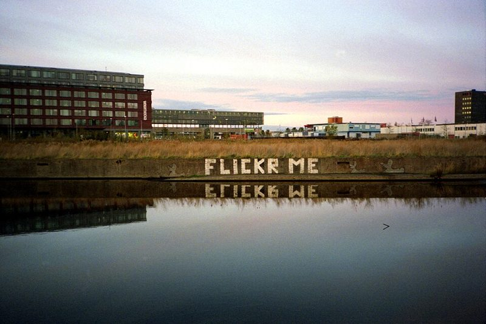

36 EXP. / 필름 / Kodak Portra 800
Kodak Portra 800
Portra의 부드러운 톤을 어두운 곳까지 가져가는 고감도 컬러 필름. 해 질 녘과 실내에서 꺼냅니다.

한눈에 보기
- 감도
- ISO 800
- 종류
- 컬러 네거티브 · C-41 현상
- 판형
- 135 · 120
- 이럴 때
- 저녁, 실내, 흐린 날 인물
- 가격
- $19.95
특징
- ISO 800인데도 Portra 특유의 따뜻하고 차분한 색
- 어두운 곳에서 손떨림 없이 찍을 여유
- 감도만큼 입자는 400보다 조금 굵음
찍을 때 팁
저녁 실내라면 노출계를 믿고, 애매하면 한 스톱 밝게. 낮에는 조리개를 조이거나 빠른 셔터로.
이 필름에 대해
"Portra 400으로는 조금 어둡다" 싶은 상황을 위한 필름입니다. 저녁 골목, 조명이 켜진 카페, 흐린 날의 인물에서 색을 크게 잃지 않고 부드럽게 남깁니다. 예시 사진은 Olympus XA로 찍은 Portra 800입니다.
현상
컬러 네거티브 현상. 국내 대부분의 현상소에서 바로 맡길 수 있고, 35mm 한 롤 현상+기본 스캔은 대략 5천~8천 원, 고해상도 스캔은 1만 원 안팎입니다. 현상소 목록과 가격